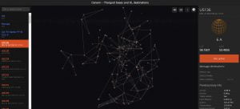

This tool provides an interactive 3d map of all the known locations for the Unknown Structure sites.
https://map.canonn.tech/ts-data.html
Note that the prior version shown below is no longer maintained.

Canonn R&D Team